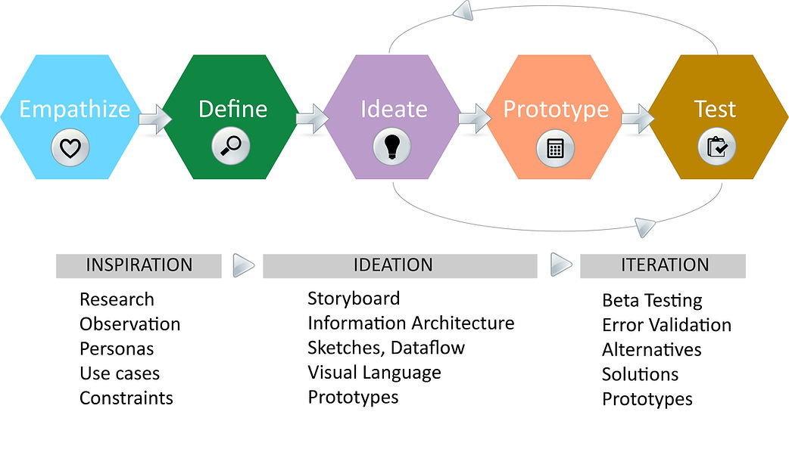

With teaching, research, and service experience, I strive to make positive experiences for people with a range of needs and abilities—from the classroom and research designs to book publishing operations as a press director—iterating on product, learning, and service designs to create meaningful experiences for everyone. My experience with human-centered socio-technical system design helps create positive change: Design for the social good.
You can learn more about me and my research interests on the About page, as well as my philosophy and reflections by category on the Reflection page. The portfolio is broken down into the following project categories which highlight relevant artifacts on the Projects page:
